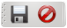

MIS Esquipulas: Barras de tareas
MIS Esquipulas: Barras de tareas
El sistema de información de Llantera Esquipulas tiene una
interfaz uniforme que le permite al usuario acostumbrarse a una
sencilla manera de trabajar que le servira para todo el sistema, uno de
los componentes claves de esta interfaz es la barra de tareas.
Normalmente dependiendo de la acción que se este realizando
el sistema usted tendra una barra de navegación en uno de dos
posible estados: el modo
navegación y el modo
edición.
El modo navegación
Este es el modo en el que inician la mayoria de las ventanas del sistema inician, tiene un total de 7 iconos que significan lo siguiente:- Nuevo (
 ): Este icono permite crear un nuevo documento en la ventana actual.
): Este icono permite crear un nuevo documento en la ventana actual. - Vista previa de impresión ( ): Este icono permite previsualizar el documento en un visor antes de imprimirlo.
- Imprimir ( ): Este icono permite imprimir el documento sin previsualizarlo antes, solo se mostrara un dialogo para seleccionar la impresora.
- Ir al principio ( ): Este icono navega al primer registro.
- Ir al anterior (
 ): Este icono navega al registro anterior.
): Este icono navega al registro anterior. - Ir al siguiente ( ): Este icono navega al siguiente registro.
- Ir al ultimo (
): Este icono navega al ultimo registro.
Modo navegación
Modo edición
Este modo es activado cuando se empieza a añadir un nuevo registro, tiene solamente 2 iconos.- Guardar (
 ): Este icono permite guardar el documento
en la base de datos.
): Este icono permite guardar el documento
en la base de datos. - Cancelar (
 ): Este icono cancela la edición
actual, bota todos los cambios y regresa al modo navegación
): Este icono cancela la edición
actual, bota todos los cambios y regresa al modo navegación
 Modo Edición